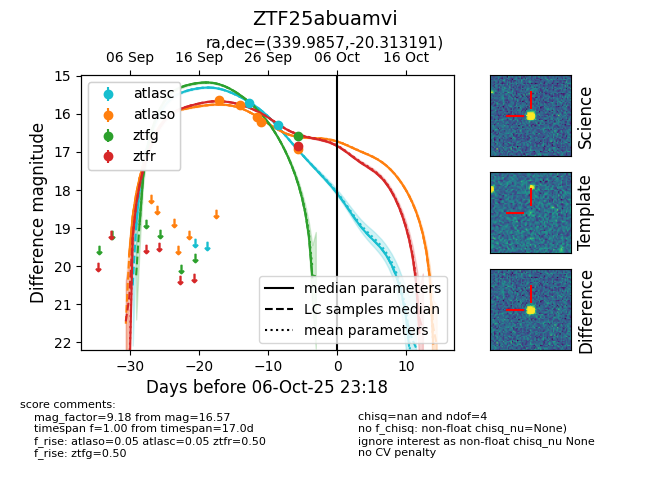
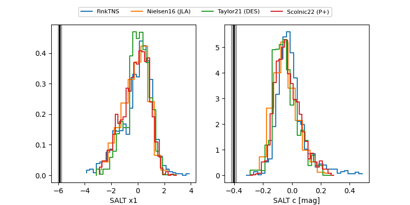

FINK: ZTF25abuamvi
Lasair: ZTF25abuamvi
ALeRCE: ZTF25abuamvi
ZTF25abuamvi (ztf,fink)
equatorial (ra, dec) = (339.9857,-20.31319)
galactic (l, b) = (38.5629,-59.23611)


last atlasc=16.28, atlaso=16.92, ztfg=16.57, ztfr=16.84
2 atlasc, 5 atlaso, 1 ztfg, 1 ztfr detections